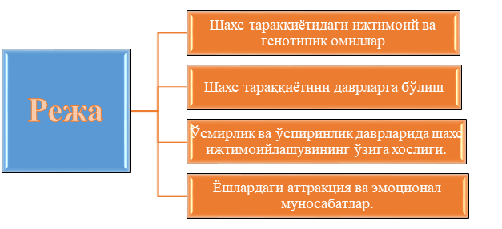

1-Ренжа. Шахс тараққиётидаги ижтимоий ва генотипик омиллар
Шахс индивидуал тараққиётининг муҳим омилларидан яна бири унинг ёшига боғлиқ бўлган хусусиятларидир. Чунки тараққиётнинг ҳар бир ёш босқичи ўзининг ривожланиш омилларига, қонуниятларига, янгиликлари ва ўзгаришларига эга бўлиб, улар шахснинг характери, темпераменти, иқтидори, билиш жараёнларига бевосита таъсирини ўтказади.
Ёш тараққиёти даврларининг ҳам сифат, ҳам микдор ўзгаришларига эга бўлган кўрсатгичлари борки, амалий психология ҳар бир ёш хусусиятларини ана шу иккала кўрсатгич нуқтаи назаридан ўрганиши ва шахс хулқини бошқариш ва таъсир кўрсатишда уларга таянмоғи лозим. Умуман психологияда исбот қилинган фактлардан бири шуки, турли даврлардаги инсон тараққиёти ўта мураккаб жараён бўлиб, ҳар бир даврнинг ўз қонуниятлари мавжуд.
Ҳар бир босқичда шахснинг бирор бир хусусиятлари ўзининг етуклик фазасига эришади. Масалан, оламни сенсор жиҳатдан билишнинг етуклик фазаси 18 - 25 ёшларда (Лазарев маълумотларига кўра), интеллектуал, ижодий етуклик - 35 ёшларда (Леман маълумотлари), шахснинг етуклиги 50 - 60 ёшларга келиб энг юқори нуқтасига эришади. Шунга ўхшаш хусусиятлар инсоннинг бутун умри мобайнида муттасил камолга етиб, ривожланиб боришини таъминлайди. Шуниси характерлики, ҳар бир ёшда бирор функцияларнинг ривожланиши бошқа бир функцияларнинг сусайиши ҳисобига рўй беради. Масалан, болаликнинг илк боғча ёшида фазога мослашув жуда кучайса, кейинчалик унинг ўрнини вақтни адекват идрок қилиш кучаяди.
Қарияларнинг бирор нарсалар хусусида билимдонлиги, маълумотлар дунёсидаги яхши ориентацияси, психомоторик функциялар ва бевосита билиш жараёнларининг сусайиши ҳисобига рўй беради. Худди шундай боланинг 3-5 ёш даври тилни, унинг луғавий ва структуравий хусусиятларини ўзлаштиришга жуда мақбул бўлса, етуклик даври бўлмиш 45-55 ёшларга келиб айни шу сифат деярли ўзини йўқотади («тил қотиб қолади»).
Психологиянинг махсус тармоғи ҳисобланмиш ёш даврлари психологиясининг энг асосий муаммоларидан бири шуки, инсон психик тараққиётида қандай омиллар - генетик, туғма ёки орттирилган, ижтимоий омиллар роли етакчи эканлиги масаласидир.
Бир томондан, боланинг ўз ота - оналаридан мерос сифатида ўзлаштирган сифатлари, масалан, анатомо - физиологик хусусиятлар, мия фаолиятининг ўзига хослиги, тана тузилиши (қўл, оёқ, юз тузилиши ва бошқ.) албатта психологик жаҳатдан одам боласининг муҳитга мослашуви, унга эркин ҳаракат қилиши, жараёнларни онгида акс эттиришига сабаб бўлади. Чунки оддийгина анатомик аномалия ҳолати (қўлнинг калталиги, бўйнинг жуда кичиклиги каби) психикага ва шахснинг жамиятда ўзини тутишига салбий таъсир кўрсатади. Лекин иккинчи томондан ташқи муҳит таъсирини ҳам камситиб бўлмайди. Масалан, агар бола махсус ўқув масканларида ўқимаса, унга тарбиявий таъсирлар кўрсатилмаса, унинг ривожланиши қандай бўлишини тасаввур қилиш қийин эмас.
Бу муаммолар устида бош қотирган олимлар Л. Выготский, Ж. Пиаже, С. Рубинштейн, А. Леонтьев ва кўплаб бошқа психологлар иккала омил ролини ҳам инкор қилмаган холда ижтимоий муҳитнинг етакчи таъсири тўғрисидаги фикрни баравар ёқлаганлар. Чунки тўғри ташкил этилган таълим-тарбия, оила ва ундаги ўзаро муносабатларнинг характери, шахс мулоқотда бўладиган ижтимоий гуруҳлар, у танлаган касб ва касбдошлари муҳити, никоҳ ва маълумот масалаларининг қандай ҳал қилинганлиги каби қатор ижтимоий омиллар шахснинг ривожланиши, унинг ўз-ўзини англаши ва ўзгаларга муносабати, билиш жараёнлари ҳамда интеллектуал тараққиётида катта аҳамиятга эгалигига шубҳа йўқ.
2-Режа. Шахс тараққиётини даврларга бўлиш
Шу вақтгача психология илмида шахс тараққиётини даврларга бўлиб ўрганишга жуда катта эътибор қаратилган. Бир қанча даврий схемалар ҳам таклиф этилган. Лекин шу соҳада астойдил ижод қилган ҳар қандай олим ўзининг «даврларини» таклиф этаверган. Бу тушунарли, зеро инсоннинг ҳаётий йўли ва унинг асосий лаҳзалари тарихий тараққиёт мобайнида ўзгаради, бир авлоддан иккинчи авлод тараққиётига ўтишнинг ўзи ҳам қатор ўзгаришларни келтириб чиқаради.
Даврларга бўлишга қаратилган классификацияларнинг ўзи ҳам икки турли бўлади: жузъий (алоҳида даврларни яна қўшимча даврларга бўлиш - «даврлар ичидаги даврлар») ва умумий (инсон умрининг барча босқичларини ўз ичига олган). Масалан, жузъий классификацияга Ж. Пиаженинг интеллектнинг ривожланишини босқичларга бўлишини киритиш мумкин. У бу тараққиётни 3 босқичда тасаввур қилган:
◼ сенсомотор интеллект босқичи (0 - 2 ёш). Бунда асосан олти босқич фарқланади;
◼ конкрет операцияларни бажаришга тайёрлаш ва уни ташкил этиш босқичи (3 - 11 ёшлар);
◼ формал операциялар босқичи (12 - 15 ёшлар). Бу даврда бола нафақат бевосита кўриб турган нарсаси, балки мавхум тушунчалар ва сўзлар воситасида ҳам фикр юрита олади.
Д.Б. Элькониннинг ёш даврлари босқичлари ҳам шу гуруҳга киради ва у ҳам болаликнинг уч даврини фарқлайди: илк болалик, болалик ва ўсмирлик. Ҳар бир босқичнинг ўзига хос етакчи фаолияти, ўзгаришлари ва ривожланиш шарт - шароитлари мавжуд бўлади ва уларни билиш тарбиячилар учун катта амалий аҳамиятга эга бўлади. Ҳар бир босқичда фаолият мотивлари ҳам ўзгаради, уларнинг ўзгариши шахс эҳтиёжлари ва талаблари даражасининг ўзгаришига мос тарзда рўй беради.
Инсон ҳаётининг барча даврини яхлит тарзда қамраб олган классификациялардан бири бутун жахон олимларининг қарорига кўра, 1965 йили Фанлар Академиясининг махсус симпозиумида қабул қилинган схема ҳисобланади. У қуйидаги 1 - жадвалда келтирилган. У Б.Г. Ананьев, чет эллик олим Бирренлар таклиф этган классификацияга яқин бўлиб, умумлаштирилган тоифалашдир.
1-жадвал
|
Ёш даврлари |
Эркакларда |
Аёлларда |
|
Чақалоқлик |
1 – 10 кун |
1 – 10 кун |
|
Эмизиклик даври |
10 кундан 1 ёшгача |
10 кундан 1 ёшгача |
|
Илк болалик |
1 – 2 ёш |
1 - 2 ёш |
|
Болаликнинг 1 - даври |
3 – 7 ёш |
3 - 7 ёш |
|
Болаликнинг 2 - даври |
8 - 12 ёш |
8 – 11 ёш |
|
Ўсмирлик даври |
13 - 16 ёш |
12 - 15 ёш |
|
Ўспиринлик даври |
17 - 21 ёш |
16 - 20 ёш |
|
Ўрта етуклик даври: |
||
|
биринчи босқич |
22 - 35 ёш |
21 - 35 ёш |
|
иккинчи босқич |
36 - 60 ёш |
36 - 55 ёш |
|
Кексалик даври |
61 - 75 ёш |
56 - 75 ёш |
|
Қарилик даври |
76 - 90 ёш |
76 - 90 ёш |
|
Узоқ умр кўрувчилар |
90 ёшдан ортиқ |
90 ёшдан ортиқ |
Тараққиётни ёш даврларга бўлишда ўзига хос классификациялар ҳам бор. Масалан, Э. Эриксон шахс «Мен» ининг ривожланиш босқичларини ажратган ва ҳар бирида ҳам ижобий, ҳам салбий жиҳатларни ажратган.
1 - босқич (ишонч - ишончсизлик) - бу ҳаётнинг 1 - йили.
2 - босқич (мустақиллик ва қатъиятсизлик) - 2 - 3 ёшлар.
3 - босқич (тадбиркорлик ва гуноҳ ҳисси) - 4 - 5 ёшлар.
4 - босқич (чаққонлик ва етишмовчилик) - 6 - 11 ёшлар.
5 - босқич (шахс идентификацияси ва ролларнинг чалкашлиги) - 12 - 18 ёшлар.
6 - босқич (яқинлик ва ёлғизлик) - етукликнинг бошланиши.
7 - босқич (умуминсонийлик ва ўзига берилиш) - етуклик даври. 8 - босқич (яхлитлик ва ишончсизлик) - кексалик.
Эриксон классификациясининг ўзига хос қиммати шундаки, унда шахснинг ўзи тўғрисидаги тасаввурларининг жамият таъсирида ўзгариши назарда тутилади. Шунга ўхшаш босқичларга бўлишлар охирги пайтда яна кўплаб муаллифлар томонидан таклиф этилмоқда (Г. Гримм, Д. Бромлей ва бошк.).
Уларнинг барчасидаги умумий мезон шуки, ҳар бир тараққиёт даври шахс ривожи учун нимани таклиф этади-ю, шахс унда қандай ривожланиш кўрсатгичларига эга бўлади. Уларни табиий ўзгаришларда билиш ва ўрганиш керак, чунки бусиз шахс тарбиясини тўғри йўлга қўйиб бўлмайди. Масалан, мактаб ёшидаги болаларга қўйилган талаблар катта одамлар жамоасига тўғри келмайди, ёки боғча ёшидаги бола билан тил топишиш билан талаба билан тил топиш ўзига хос педагогик тактни ва ўша ёш соҳасида билимдонликни талаб қилади.
3-Режа. Ўсмирлик ва ўспиринлик даврларида шахс ижтимоийлашувининг ўзига хослиги
Ўсмирлик ва ўспиринлик даврлари мактаб ва бошқа таълим масканларида ўқиш даврларига тўғри келади. Бу даврдаги етакчи фаолият ўқув фаолияти бўлиб, унда бола билим олиш билан боғлиқ, малака ва кўникмаларни орттиришдан ташқари, шахс сифатида ҳам муҳим ўзгаришларга юз тутади.
Ўсмирлик даври энг мураккаб ва шу билан бирга муҳим тараққиёт босқичидир. Илк ўсмирлик 11-13 ёшни, катта ўсмирлик - 14 - 15 ёшларни ўз ичига олади. Бу даврнинг энг муҳим ҳислати шундан иборатки, у болаликдан ўспиринлик, катталикка, ёшликдан етукликка ўтиш давридир.
Ўсмирлик - организм тараққиётидаги шиддат ва нотекислик билан характерланиб, бу даврда тананинг интенсив тарзда ривожланиши ва суякларнинг қотиши рўй беради. Юрак ва қон томирлар фаолиятида ҳам нотекислик бўлиб, бу ҳам бола феълининг ўзгарувчан, динамик ва баъзан номаъқулликлар ва ноқулайликларни келтириб чиқаради. Булар албатта асаб тизимига ҳам ўз таъсирини кўрсатиб, бола тезга аччиқланадиган ёки тормозланиш юз берганда анчагача депрессия ҳолатидан чиқолмайдиган тушкунликда қолиши ҳам мумкин.
Ўсмир жисмоний тараққиётини белгиловчи асосий омил жинсий балоғат бўлиб, у нафақат психик, балки ички органлар фаолиятини ҳам белгилайди. Шу билан боғлиқ холда онгли жинсий майллар, шу билан боғлиқ нохуш ҳис - кечинмалар, фикрлар пайдо бўладики, бола уларнинг асл сабабини ҳам тушуниб етолмайди. Психик тараққиётнинг ўзига хослиги шундаки, у муттасил ривожланиб боради, лекин бу ривожланиш кўплаб қарама-қаршиликларни ўз ичига олади.
Бу тараққиёт ўқув жараёнида кечгани учун ҳам тўғри ташкил этилган ўқув фаолияти бола психиканинг муозанати ва унинг турли фикр - ўйлардан чалғишига замин яратади. Айникса, диққат, хотира, тафаккур жараёнлари ривожланади. Айни шу даврда бола мустақил равишда фикрлашга интила боради. Чунки бу даврда у кўпроқ ўз фикр-уйлари дунёсида мушоҳада қилиш, олам ва унинг сирларини билишга, назарий билимларни кўпайтиришга интилади. Бунинг сабаби - яна ўша катталикка ўтиш бўлиб, болада ўзига хос «катталик» ҳисси пайдо бўлиб, бу нарса унинг гапириши ва фикрлашларида ҳам ифодаланади.
Шунинг учун ҳам мактабда берилган мустақиллик ва тўғри ташкил этилган ўқиш шароитлари, самимийлик муҳити унда мустақил фикрлашига катта имкониятлар очиши ва ундаги ижодий тафаккўрни ривожлантириши мумкин. Шунга боғлиқ тарзда ўсмирнинг ўз фалсафаси, ўз сиёсати, бахт ва муҳаббат формуласи яратилади. Мантиқан фикрлашга ўрганиши эса унга ўзича ақлий операцияларни амалга ошириш, тушунчалар ва формулалар дунёсида ҳаракат қилишга мажбур қилади.
Бу ўзига хос ўсмирлик эгоцентризмининг шаклланишига - бутун олам ва унинг қонуниятлари унга бўйсуниши керакдай фикрнинг пайдо бўлишига олиб келади. Шунинг учун ҳам айнан ўсмирлик пайтида болалар ўз ота-оналари билан ҳадеб тортишаверадилар. Аниқ бир тўхтамга келолмаса ҳам тортишиш бирор фиркни изхор қилиш эҳтиёжининг ўзи унга жуда ёқади.
Шундай бўлишига қарамай, ўсмирлик юқорида таъкидланганидек, қарама - қаршиликларга бой даврдир. Уни баъзи олимлар «кризислар, таназзуллар» даври ҳам деб атайдилар. Сабаби - бола руҳиятида шундай инқирозий ҳолатлар кўп бўладики, у бу инқирозни бир томондан ўзи ҳал қилгиси келади, иккинчи томондан, уни ҳал қилишга имконияти, кучи ва ақли етишмайди. Масалан, «катталик ҳиссига» тўскинлик қиладиган омиллардан бири - бу уларнинг ўз ота - оналаридан моддий жиҳатдан қарамлиги. Руҳан қанчалик ўзларини катта деб ҳис қилмасин, ўсмир мактабга кетаётиб, онасидан ёки отадан пул сўрайди, улар эса болага болаларча муносабатда бўлиб, озгинагина пул берадилар.
Иккинчидан, катталардай бўлишни хоҳлайди, лекин қиз бола онасининг, ўғил бола отасининг кийимини тошойна олдида кийиб кўрса, барибир ярашмайди. Яъни, ташқи кўринишдаги камчиликлар - ҳали қадду-қоматнинг келишмаганлиги, унинг устига юзлари ва танасида пайдо бўладиган нохуш тошмалар унинг руҳан салбий ҳисларни бошдан кечиришига олиб келади. Яъни, бу ёшни «аросат» ёши ҳам деб аташ мумкин, чунки катта бўлиб катта эмас, бола ҳам эмас. Шуларнинг барчаси ўсмирлик давридаги руҳий туғёнларга сабаб бўлади. Лекин шуларга қарамай, бола ўзи билиб, билмай ўз ақлий салоҳиятини ўстиришга интилади, чиройли фикрлашга ташна бўлади ва бу - унинг психик тараққиётидаги энг муҳим ўзгариш ҳисобланади.
Ўсмир шахснинг такомиллашуви ва шаклланишига туртки бўлган омиллардан бири - ўқув фаолияти мотивларидаги сифат ўзгаришидир. Кичик мактаб ёшидаги боладан фарқли, ўсмир энди фақат билимлар тизимига эга бўлиш, ўқитувчининг мақтовини эшитиш ва «5» баҳоларни кўпайтириш учун эмас, балки тенгкурлари орасида маълум ижобий мавқени эгаллаш, келажакда яхши одам бўлиш учун ўқиш мотивлари устивор бўлиб боради. Лекин И.В. Дубровинанинг берган маълумотларига кўра, ўқув фаолияти мотивлари орасида умуман билиш, янги билимларга эга бўлиш мотиви кучсиз бўлгани сабабли, улар мактабга боргиси келмайди, ўқишга оғриниб келиб, салбий эмоциялар ва ҳавотирлик ҳисларини бошдан кечирадилар (ўртача 20% ўқувчилар). Бу катталарнинг ўсмир билан ишлашини қийинлаштиради.
Ўсмирнинг шахс сифатида тараққиётида икки хил ҳолат кузатилади: бир томондан, бошқалар, тенгқурлар билан яқинрок алоқада бўлишга интилиш, гуруҳ нормаларига бўйсуниш, иккинчи томондан, мустақилликнинг ошиши ҳисобига бола ички руҳий оламида айрим қийинчиликлар кузатилади. Ўзгаларни англаш билан ўз- ўзини англаш ўртасида ҳам қарама-қаршиликлар пайдо бўлади. Кўпинча ўсмир ўз имкониятларини юқори баҳолайди, бошқалар эса унинг кучи, иродаси ва салоҳиятига ишончсизлик билан қарайди. Лекин шундай бўлса-да, ўзини нима қилиб бўлса ҳам ҳеч бўлмаганда тенгқурлар жамияти томонидан тан олинишига эришишга интилади ва улар билан мулоқот ҳаётининг маъносига айланиб қолади. Агар мабодо ўсмир шу даврда бирор сабаб билан тенгқурлари жамияти томонидан инкор қилинса, у бунга жуда катта мудхиш воқеадай қарайди, мактабга бормай қўйиши, ҳаттоки, суицидал ҳаракатлар (ўз жонига қасд қилиш) ни ҳам содир этиши мумкин.
Ўсмирлик давридаги қийинчиликларнинг олдини олишнинг энг ишночли ва фойдали йўли - бу унинг бирор нарсага турғун қизиқишига эришиш, фаолият мотивларини мазмунлироқ қилишдир. Масалан, шу даврда техникага қизиқиб қолган бола қизиқишини қондириш шарт-шароитининг яратилиши, бекор қолмаслигига эришиш, ҳар бир ҳаракатини рағбатлантириш, унга бир иш қўлидан келадиган одамдай муносабатда бўлиш катта педагогик аҳамиятга эга. Унинг қизиқишларини била туриб, олдига янгидан янги мақсадлар қўйиш - бола шахсининг ривожига асосдир. Шундагина унинг ўз «Мен»и тўғрисидаги тасаввурлари ижобий, ўз-ўзига баҳоси объектив ва адолатли бўлади, ўзининг нималарга қодирлиги ва ким эканлиги ҳақида яхши фикрлар пайдо бўлади.
Ўспиринлик даври. Юқори синфга ўтган ўспирин психологиясининг ўзига хослиги шундаки, у ҳозирги пайтини, бугуни ва эртасини келажак нуқтаи назаридан, истиқболга назар билан қабул қилади. Айнан шу даврга келиб, ўспирин турли касбларга қизиқа бошлайди, ўзининг келажакда ким бўлишини тасаввур қила бошлайди. Демак, ўз-ўзини профессионал нуқтаи назардан ажратиш, тасаввур қилиш - ўспиринликнинг энг муҳим янгилигидир. Профессионал тараққиётнинг асосий босқичларини ажратар экан, Е.А. Климов (1996), алоҳида «оптация» (лотинча сўз: optatio - хохиш, танлов) босқичини ажратади ва унинг характерли томони - одам томонидан профессионал тараққиётнинг босқичи танланишидир, деб эътироф этади. Оптация босқичи 11 - 12 ёшдан 14 - 18 ёшгача бўлган тараққиёт даврини ўз ичига олади.
Бирор аниқ касб - хунарни танлаш ва ўз фаолиятини шунга йўналтириш ўспирин шахси учун жуда катта аҳамиятга эга. Ана шундай танловнинг адекват ва тўғри бўлиши ўспириндаги билиш билан боғлиқ қизиқишлар ва профессионал йўналишнинг шаклланганлигига боғлиқ бўлади. Профессионал қизиқишларнинг шаклланишининг ўзи олимлар томонидан тўрт босқичли жараён сифатида қаралади. Унинг биринчи босқичи 12-13 ёшларга тўғри келади ва ўта ўзгарувчанлиги, шахсдаги билиш жараёнлари ва асл иқтидор билан боғланмаганлиги билан характерланади. 14-15 ёшларга тўғри келадиган иккинчи босқичда қизиқишлар пайдо бўлади, улар кўп бўлиб, бевосита боланинг билиш имкониятлари ва шахсий хусусиятлари билан боғлиқ бўлади. Учинчи босқичда - 16-17 ёшларда қизиқишларнинг шундай интеграцияси рўй берадики, улар аввало жинсий хусусиятлар ва шахсдаги индивидуал хусусиятлар билан боғлиқ холда ривожланади. Масалан, қизлар ва ўғил болалар ўзларига мос ва ярашадиган касб-ҳунарни танлай бошлайдилар.
Л. Головей (1996) фикрича, тўртинчи - ҳал қилувчи босқичда қизиқишлар доираси сезиларли даражада торайиб, профессионал йўналиш шаклланаиб бўлади ва у касб танлаш билан якунланади.
Ўзининг юқори поғонасига кўтарилган қизиқишлар ўспириннинг профессионал йўналиши ва тўғри касб-ҳунарни танлашига замин яратади. Улар боладаги индивидуал - психологик хусусиятлар ва жинсий фарқлар билан боғлиқ бўлгани учун ҳам ўғил болалар кўпрок - техник ва иқтисодий йўналишларни, қизлар эса - ижтимоий-гуманитар ва бадиий соҳалар билан боғлиқ касбларни танлайдилар.
Умуман, инсон ҳаётида профессионал ўз-ўзини англаш катта ўрин тутади ва у жуда ёшлик пайтиданоқ шакллана бошлайди. Бу жараённи босқичларда тасаввур қилиш мумкин.
Биринчи босқич: болалар ўйини, бунда бола илк ёшликданоқ у ёки бу касбга боғлиқ профессионал ролларни қабул қилади ва унинг муҳим элементларини ўзича «ўйнайди» («ўқитувчи», «доктор», «тракторчи», «футболист», «артист» ва шунга ўхшаш).
Иккинчи босқич: ўсмирлик фантазияси - бунда ўсмир ўзига жуда ёққан профессионал ролни ҳаёлан эгаллайди.
Учинчи босқич: касб-хунарни дастлабки танлаш - ўсмирлик ва илк ўспиринлик даврига тўғри келади. Турли-туман фаолият турлари дастлаб ўсмирнинг қизиқишлари нуқтаи назаридан («прокурорликка қизиқаман, демак, юрист бўлишим керак»), кейин унинг қобилиятлари нуқтаи назаридан («математикани осон ечаман, математик ёки муҳандис бўлсаммикан?»), ва нихоят, ўсмирдаги қадриятлар тизимидаги аҳамиятига қараб («ночор касалларга ёрдам бергим келади, врач бўламан») тоифаларга бўлинади ва ажратилади.
Тўртинчи босқич: амалий қарор қабул қилиш - касбни танлаш. Бунда иккита муҳим жиҳат бор: конкрет ихтисосликни унинг квалификацияси хусусиятлари, ишнинг ҳажми, оғирлиги, масъулиятлилиги ва унга етарли тайёргарликнинг борлиги. Лекин охирги социологик маълумотларга кўра, олий ўқув юртини танлаш, конкрет касб-ҳунарни танлашдан олдинроқ юз бермоқда. Масалан, ўспирин қиз «Мен барибир Низомий номли университетга кираман», дейди ва сўнгра конкрет факультет танланади. Шунинг учун ҳам кўпинча, ихтисосликдан, кейинчалик профессиядан «совиб қолиш»лар ана шундай установкалар билан тушунтирилади.
Бундан ташқари, касб танлашга таъсир қилувчи яна бошқа омиллар ҳам борки, уларнинг ҳисобга олиниши ҳам баъзан ёшларнинг тўғри, ўз имкониятлари ва кобилиятларига мос касб-ҳунарнинг танланмаслигига сабаб бўлади.
4-Режа. Ёшлардаги аттракция ва эмоционал муносабатлар
Ўсмирлик ва ўспиринлик даврлари нафақат профессонал танлов ва касб эгаллаш учун мақбул давр бўлмай, бу давр ёшларнинг ўзлигини англаш, ўз қадр - қимматини билиш ва бошқаларга нисбатан муносабатда бўлиш тажрибасини эгаллаш даври ҳамдир.
Ўсмир ҳам ўспирин ҳам қанча ички руҳий изтироб, қарама-қаршилик, масъулият онларини бошидан кечирмасин, унинг эмоционал олами, атроф - муҳитда рўй бераётган ҳодисаларни онгида акс эттириши катта ўрин тутади. Айнан ўсмирлик даври бола қалбида ким биландир сирлашиш, кимнидир ўзига энг яқин киши сифатида тан олиш, уни руҳиятида кечаётган барча ўзгаришлардан вофиқ этиш истаги ва эҳтиёжини уйғотади. Биринчи марта «дўстлик», «муҳаббат», «севги » тушунчалари ҳам айнан шу даврда пайдо бўлади. Шунинг учун ҳам етуклик ва кексалик давридаги кишилар ҳам ўсмирлик ва ўспиринлик йилларини энг беғубор, жозибали ва ёқимли сифатида хотирлайдилар.
Бу тараққиёт даври аттракция деб аталмиш ҳиссиётнинг пайдо бўлиши учун энг мақбул даврдир.
Аттракция (лотинча attrahere - ёқтиртириш, ўзига жалб этиш) - бу бир инсоннинг бошқа бир инсонга ижобий муносабати асосида ёқиши ва ёқтириши, ўзаро мойилликни тушунтирувчи эмоционал ҳисдир. Бу бир одамда бошқа бир одамга нисбатан шаклланадиган ижтимоий установканинг бир кўриниши бўлиб, симпатия - ёқтиришдан тортиб, то севги муҳаббат каби чуқур эмоционал боғлиқлик ҳам шу ҳис асосида пайдо бўлади.
Ижтимоий психологияда ушбу ҳиссиётнинг асл сабаблари ижтимоий мотивлар - шерикларнинг бевосита битта макон ва замонда эканликлари, уларнинг тез - тез учрашиб туришлари, учрашувлар тезлиги, суҳбатдошлар ўртасидаги масофа, ҳиссиётларнинг тарбияланганлиги каби омиллар таъсирида пайдо бўлиши ва унинг кечиш механизмлари ўрганилади.
Тадқиқотлар бу каби эмоционал муносабатлар айнан балоғат ёши арафасида ривожланишини исбот қилган. Шуниси аҳамиятлики, аттракциянинг намоён бўлиши, унинг кучи ва мазмуни ўсмир - ёшнинг шахс сифатида ўзини идрок қилиши, ўз-ўзини ҳурмат қилиши ва ўзгаларга нисбатан муносабатларда тоқатлироқ бўлишига бевосита таъсир кўрсатар экан. Шунинг учун ҳам ана шу даврда ўсмир ва ўспирин атрофида у ёқтирган ва уни ёқтирадиган одамларнинг бўлиши жуда катта тарбиявий аҳамиятга эга бўлиб, унинг акси бола руҳий азобланишининг сабабларидан ҳисобланади.
Дўстлик. Ўсмирлик ва ўспиринлик ёшида пайдо бўладиган барча муаммоларни ечиш ва у билан ўртоқлашиш учун болага дўст керак. Психолог тили билан айтганда, дўст - бу «алтер-Эго», яъни иккинчи «Мен» бўлиб, у ўша пайтдаги «Мен»нинг бир қисми сифатида идрок қилинади. Бу шундай одамки, шахс у билан барча дарду-ҳасратларини муҳокама қилади, муаммоларини унинг олдига тўкиб солади.
Дўстликнинг бошқа интим, эмоционал ҳиссиётлардан фарқи шуки, у одатда бир жинс вакиллари ўртасида бўлади ва дўстлар одатда 2 киши, айрим холларда 3-4 киши бўлиши мумкин. Дўстликнинг ҳам кўзлаган мақсадлари бўлади: у амалий, иш - фаолият билан боғлиқ, соф эмоционал (яъни, мулоқот эҳтиёжларини қондириш), рационал (интеллектуал муаммоларни ҳал қилишга асосланган), ахлоқий (ўзаро инсоний сифатларни такомиллаштиришга хизмат қилувчи) бўлиши мумкин.
Дўстликнинг асосий шарти - ўзаро бир-бирини тушуниш. Шу шарт бўлмаса, дўстлик ҳақида гап бўлиши мумкин эмас. Агар ана шундай тушуниш бўлса, дўстлар гап-сўзсиз ҳам қилиқлар, юз ифодаси, юриш - туришга қараб ҳам бир - бирларини тушуниб олаверадилар. Икки жинс вакиллари ўртасида ҳам дўстлик бўлиши мумкин, фақат у кўпинча танишув билан севги-муҳаббат ўртасидаги ораликни тўлдиришга хизмат қилади.
Дўстларга хос бўлган сифатларга бир-бирини аяш, ғамхўрлик қилиш, ишонч, шахсий муаммоларга бефарқ бўлмаслик, қўллаб-қувватлаш, меҳр кабилар киради. Уларнинг ардоқланиши дўстликнинг узоқ давом этиши ва иккала томон манфаатига мос ишларни амалга оширишга ундайди. Дўсти йўқ ўсмир ёки ўспирин ўзини жуда бахтсиз, ночор ҳисоблайди. Айникса, агар дўсти хоинлик қилса, унинг кутишларига зид иш қилса, бу ҳолат жуда қаттиқ руҳий изтиробларни келтириб чиқаради. Шунинг учун ҳам ҳар бир ёш ўз дўстини ҳафа қилиб қўймаслик, унинг кўнглига қараб иш қилишга ҳаракат қилади. Агар илк ўспиринликда дўстлик мазмунан анча юзаки, бевосита мулоқот мақсадлари асосида ташкил этилган бўлса, ёш ўтган сари у ҳаёт мазмуни ва юксак қадриятига айланиб боради.
Севги. Агар дўстлик аттракция намоён бўлишининг биринчи кўриниши бўлса, севги қалблар яқинлашувининг муҳим аломатидир. Севги - бу нафақат ҳиссиёт, балки бошқаларни сева олиш қобилияти ҳамда севимли бўла олишдир. Шунинг учун ҳам ўсмирлар ва ўспиринлар учун бу ҳиссиётнинг борлиги жуда катта аҳамиятга эгадир.
Айнан ўсмирлир ва илк ўспиринликдаги севги беғубор, тиниқ, самимий бўлиб, ёш ўтган сари унинг мазмуни бойиб, бошқа қадриятлар ҳам ўрин эгаллай бошлайди. Тўғри, ўсмир билан ўспирин севгисида ҳам сифат фарқлари бор. Масалан, ўсмирлар бир-бирларига меҳр қўйишганда кўпроқ шерикларнинг ташқи қиёфалари, интеллектуал имкониятлари ва ижтимоий мавқеларига эътибор берадилар.
Ҳақиқий севги ўспиринлик йилларининг охирларида пайдо бўлиб, унинг асосий мезони энди ташқи белги ва афзалликлар эмас, балки инсоний фазилатлар бўлиб хизмат қилади. Севги - бу шундай туйғуки, у бир шахснинг иккинчи шахс устидан мутлоқ устунлиги ёки афзаллигини инкор этади. Бундай ҳиссиёт эса севги бўлмайди. Шунинг учун ҳам ўспиринлик ёшидаги йигит ва қизлар гуруҳда мулоқотда бўлишни ва бунда тенг ҳуқуқли муносабатлар бўлишини хоҳлайдилар. Бу талаб севишганлар учун ҳам қонун ҳисобланади.
Дўстликдан фарқли, бу ерда турли кўринишлар ёки турларни ажратиш мумкин эмас. Бу ҳиссиёт шундайки, у томонларни фақат ахлоқан ва маънавий жиҳатдан яқин бўлишини тақозо этади. Севган юрак маънавий жиҳатдан яхши, улуғ ва ижтимоий жиҳатдан манфаатли ишларни қилишга қодир бўлади. Тўғри, кўпчилик ота-оналар ўқувчилик йилларида пайдо бўлган севги ҳиссидан бироз чўчийдилар, уни чеклашга, ҳаттоки, қизларга таъқиқлашни ҳам афзал кўрадилар. Лекин айнан шу ҳиснинг борлиги ёшларни улуғворроқ, самимийроқ, ҳар нарсага қодир ва кучлироқ қилади. Севгида «иши юришмаганларнинг» эса бошқа соҳаларда ҳам иши юришмайди. Улар ўзларини тушкун, бахтсиз, омадсиз ҳисоблайдилар.
Олимлар севгининг ёшларда намоён бўлиши ва унинг психологик таҳлилини ўрганишган. Маълум бўлишича, севгининг дастлабки босқичи - ўзаро ёқтириб қолиш - симпатия бўлиб, бунда асосан севги объектининг ташқи жозибаси роль ўйнайди. Масалан, ўзбек хонатласини чиройли қилиб тиктириб олган қизчанинг даврада пайдо бўлиши, табиий кўпгина йигитларнинг эътиборини беихтиёр ўзига тортади.
Улардан кўпчилиги бирданига, бир вақтда айнан шу қизчани «ёқтириб» қолишади. Лекин даврадаги қайси йигит унга ҳам маълум жиҳатлари билан ёқиб қолса, ўзаро симпатия шу икки шахс ўртасида рўй беради. Вақтлар ўтиб, бу икки ёш бир неча марта учрашиб туришса, оддий ёқтириш севгига, жиддийроқ нарсага айланиши мумкин. Шу нарса маълумки, айнан шу қонуниятни билгани учун ҳам кўпчилик ўспиринлар биринчидан, давраларда бўлишни, қолаверса, бировларга ёқиш учун ташқи кўринишларига алоҳида эътибор беришга ҳаракат қиладилар. Ёқимтой бўлишга ҳаракат қилсаю, бирортанинг эътиборини ўзига тортолмаган ўспирин эса бу ҳолатни жуда чуқур қайғу билан бошдан кечиради.
Агар худди шундай нарса бир неча марта сурункалик такрорланса, ўша ёш давраларга ҳам бормай қўядиган, ўзи ҳақида ёмон фикрларга борадиган, фақат айрим холлардагина ҳаммани ўзига «душман» билиб, ҳафа бўладиган бўлиб қолади. Экспериментал изланишларнинг кўрсатишича, севишганлик ўспирин ёшларнинг шахс сифатларига бевосита таъсир кўрсатиб, унинг ҳатти - ҳаракатларида намоён бўлади. Масалан, севишганлар бошқалардан фарқли, икки марта зиёд ўзаро гаплашишар, гаплари сира адо бўлмас экан. Бундан ташқари, бундайлар саккиз (!) марта ортиқ бир - бирларининг кўзларига қараб вақт ўтказишаркан.
Яна шу нарса аниқланганки, севги билан боғлиқ ҳиссиётлар ҳар бир жинс вакилида ўзига хос хусусиятларга эга экан. Масалан, ўспирин ёшлар қизларга нисбатан романтизмга берилувчан, тезгинада яхши кўриб қоладиган бўлишаркан. Уларнинг тасаввуридаги севги анча романтик, идеал кўринишга эга бўлади. Қизлар эса йигитларга нисбатан секинроқ севиб қолишади, лекин севгини унутиш, ундан воз кечиш уларда осонроқ кечаркан.
Агар йигитлар бир кўришдаёк ёқтириб қолган қизни севиб ҳам қолиши эҳтимоли юқори бўлса (экспериментларда севги билан симпатиянинг корреляцион боғлиқлиги кучли), қизларда бундай боғлиқлик анча паст экан, яъни ҳамма ёқтирганларини ҳам севмас экан, умуман симпатиянинг пайдо бўлиши ҳам бироз қийин экан.
Бундай ташқари, ўспиринлик йилларидаги севги ва муҳаббат ҳисси нафақат қарама-қарши жинс вакилига қаратилган бўлади, балки айнан шу даврда ота-онанинг кадрланиши ва уларга нисбатан севги-муҳаббат, яқинлар ака-ука, опа-сингил, ҳаётда ибрат бўладиган кишиларни яхши кўриш, Ватанни севиш каби олий ҳислар ҳам тарбияланади.
Шунинг учун ҳам ҳақиқий юксак муҳаббат соҳиблари бўлмиш ёшларни тарбиялаш - жамиятда инсоний муносабатларни барқарорлаштириш, одамлар ўртасида самимий муносабатлар ўрнатиш ва маънавиятни юксалтиришга хизмат қилади. Таълимнинг барча босқичида маънавий тарбиянинг ажралмас бўлаги сифатида ана шундай самимий муносабатларни тарбиялаш, тарғиб этиш, керак бўлса, ёшларга ана шундай севги ва садоқат ҳақидаги қадриятларимизни онгга сингдиришимиз керак. Севги ва муҳаббат ҳислари кенг маънода - Ватанга, юртга, ҳалққа, борлиққа, касбга ва яқин кишиларга қаратилган бўлиши керак.
Мавзу юзасидан қисқача хулосалар:
Ушбу мавзу орқали шахс психологияси ва характерининг ёшга боғлиқлиги, ёш даврлари классификацияси, ҳар бир ёш даврининг ўзига хослиги, ёш даврлари кризислари ҳақидаги маълумотлар келтирилган. Ёшлардаги аттракция ва эмоционал борликнинг намоён бўлиши, ўспиринлик давридаги дўстлик, севги ва садоқат ҳисларининг кўринишлари, уларни тарбиялаш йўллари кўрсатиб утилган. Ёш даврлари психологияси ва акмеологиянинг касб танлаш ва касбга йуналтириш муаммолари бўйича ўзаро боғлиқлиги таҳлил қилинган. Бу каби маълумотлар талабаларнинг ўз-ўзини англашларига ва тенгқурлари, атрофдагилар билан етарлича ўзаро тушунишларига ёрдам беради.
Мавзу юзасидан топшириқлар:
1. Ёш даврлари психологиясининг предмети ва вазифалари.
2. Шахс психик тараққиётини ҳаракатга келтирувчи омиллар.
3. Психик тараққиётнинг генетик ва ижтимоий омиллари.
4. Психик тараққиёт жараёнида шахс ва интеллектуал ривожланиш масаласи.
5. Шахс психик ривожланишини даврларга бўлиш.
6. Ўсмирлик даврида шахсий сифатларнинг шаклланиши омиллари
7. Ўспиринлик даври ва профессионал йўналиш муаммоси. Шахс ва касб - хунар муаммоси.
8. Аттракция, унинг моҳияти ва кўринишлари.
9. Севги ва дўстлик ҳисларининг психологик табиати.
10. Ёшларда юксак маънавий - ахлокий сифатларни тарбиялаш.
Мавзу юзасидан ижтимоий тренинглар
“СОЯ” тренинг машғулоти.
Машғулот тавсия этиладиган ҳолатлар: гуруҳий психокоррекцион фаолиятда қўлланилиши мумкин бўлиб шахслараро муносабатларни, оилавий муносабатлар ва фарзанд ҳамда ота-она муносабатларида юзага келган бузилишларни коррекция қилиш, низоли вазиятларни бартараф этишда. Мақсад эътиборлилик, хотирани ривожлантириш, ички эркинлик ва ҳотиржамликни ошириш, ижтимоий идрок ва бошқаларга мослашиш кўникмасини ривожлантириш.
Фонда майин мусиқани паст овозда қўйиб қўйиш керак. Ҳамма иштирокчилар ўз жуфти билан туриб олишади. Бир киши “бошловчи” иккинчи одам унинг “сояси” вазифасини бажариши лозим. Бошловчи юриши, ҳар ҳил ҳаракатлар қилиши керак, соя эса унинг ортидан 2- метр узоқликда юриб уни ҳаракатларини ўхшатиб аниқ қайтариши лозим. 5-10 дақиқа ёки битта мусиқа тугагач роллар алмашиниши лозим.
Бунда бошловчига турли ҳаракатлар қилишга стимул бериш лозим. Иштирокчиларга кўпроқ ҳаракат қилиш учун бу машғулот каттароқ тренинг аудиториясида ёки очиқ майдонда ўтказилиши ҳам мумкин. Бошловчи, тасаввурий ҳаракатлар қилиши, юриши, югуриши, гул узиши, ўтириб олиши, бир оёқда сакраши, ортига қараши…мумкин. Соя эса уни ҳаракатини қайтариши лозим.
Эслатма: агар она ва фарзандлар жуфтлигида ўтказилганда машғулотни катталар бошловчи сифатида бошлашлари керак. Кейин рол алмашилади.
Машғулот тугагач, мақсаддан келиб чиқиб психолог муҳокама олиб бориши керак. Бунда бир бирига мослашиш жараёнида улар нимани ҳис қилганини, қандай ноқулайлик ва қийинчиликлар бўлганини, бу машғулотда нималарни англаганликлари ёҳуд нималарни бу машғулот англатиш мумкинлигини сўраш мумкин. Муҳокамалардан сўнг машғулотни якунлаш учун психокоррекцион хусусиятга эга бўлган бирор воқеа айтиб берилиши ёки тавсиялар берилиши ҳам мумкин.
П. Я. Гальперин диққати суст бўлган болалар устидан «ақлий хатти-ҳаракатларни босқичма-босқич шакллантириш назарияси» га асосланиб, бир неча сериядан иборат тажриба ишларини олиб борган. «Ақлий хатти-ҳаракатларни босқичма-босқич шакллантириш» тажрибаси 5 сериядан иборат бўлиб, унинг биричи қисмида 23 та синалувчи (3-синф ўқувчилари) қатнашган. Уларга 14та хатоси бор текст (матн) берилиб, уларни тузатиш вазифаси қўйилади. П. Я. Гальперин назариясига биноан, бу асосда болаларга ориентирлаш шакллантириш керак. Шунинг учун 1-серия «Ориентирлаш асоси» деб номланади.
Тажрибанинг 2-серияси эса, «Моддийлаштириш» деб аталиб, 9та синалувчидан 20-25 минут давомида ўтказилади. Бу тажриба индивидуал тарзда олиб борилади. Ўқувчилар текстдаги хатоларни топиб, уларни карточкалардан текширишлари (таққослашлари) керак. Тажрибада 5та ўқувчи кўпроқ қийинчиликларга дуч келишади, овоз чиқармасдан ўқиб, тезгина хатоларни тузатишади.
3-серия объектни овоз чиқариб муҳокама қилиш дейилади.
Берилган топшириқни бажариш жараёни бирмунча қийин кўчади. Чунки, ҳали бу ёшда болаларда ўз-ўзини назорат қилиш шаклланмаган бўлади. Шунинг учун тажрибада уй топшириқларини ўқувчилар мустақил тарзда ечадими ёки йўқми назорат қилиш ота-оналардан илтимос қилинади.
Ва ниҳоят, шунга эришилдики, «диққатсизлик» йўқолиб, ўқишга муносабат ўзгаради. Уларда интилувчанлик ва қунт шаклланиб, ўз-ўзига ишониш, ўз хатти-ҳаракатларини назорат қилиш пайдо бўлади.
4-серия шивирлаб ўзи учун мулоҳаза юритишдан иборатдир. Бу серияда «диққатсизлик» туфайли қилинаётган хатолар барҳам топади. Болалар ушбу босқичда 0, 2 хатога йўл қўядилар, холос.
5-серия-«Дилга жо қилиш» («в уме») дир. Бу серияда экспериментаторлар ўз олдиларига назорат қилиш хатти-ҳаракатларини умумлаштириш вазифасини қўядилар.
1. «Шахмат доскасига фигура ҳолати тўғрилигини текшир»
2. «Шулар орасидаги ўхшашини топ»
3. «Намунавий карточкадаги рақам билан бунисидаги (карточкадаги) рақам бир хилми, текшир»
4. «Бетартиб жойлашган рақамлар ичидан мана бунақасини топ» ва бошқалар.
Умуман олганда, 3-сериянинг натижалариданоқ кўринадики, топшириқлар кўламини (ҳажмини) кенгайтириб назорат қилиш хатти-ҳаракатларини шакллантиришга асос бўлади.
Олма-олча
Мақсад: диққат ва эшитиб реакцияга киришиш жараёнини ривожлантириш, ижобий кайфиятни шакллантириш.
Жараён: биринчи навбатда иштирокчилардан икки кишилик кичик гуруҳлар (жуфтликлар) ҳосил қилинади. Улар бир бирига юзма-юз туриб олишлари ва қўлларини худди саломлашишда қўл сиқишгандагидай, лекин 5-10 см масофа сақлаб қўлларини текказмайин туришлари керак. Шундан сўнг шарт тушунтирилади, бунда тренердан ўнг тарафда турган иштирокчилар олма деб аталадилар ва тренердан чап томонда турганлар олча деб аталадилар. Агар тренер олма сўзини айтса, “олма”лар (яъни олма деб аталган иштирокчилар) “олча”ларнинг (олча деб аталган иштирокчиларнинг) қўлини ушлаб олишлари керак, бунда “олчалар” қўлларини олиб қочишлари лозим. Агар тренер аксинча олча сўзини айтса “олчалар” “олмаларнинг” қўлларини ушлаб олишлари керак, бунда “олмалар” қўлларини тезда олиб қочиш учун улгуришга ҳаракат қилиши жоиз. Тренер учун шарт шуки, у олма ва олча сўзларини шунчаки эмас, иштирокчиларни аввал ол ол ол ол ол ол деб чалғитиб туриб, кейин олма ёки олча сўзини айтиши муҳим. Олма ёки олча сўзларини тренер ихтиёрий тарзда қайсидир бирини айтади.
Ўйин икки-уч маротаба ўйналгач, олма ва олча номларини иштирокчилар ўзаро алмашишлари мақсадга мувофиқдир.
КЕЙС ВАЗИЯТ
Талаба фан ўқитувчисига қараб: “Мен яна дафтар олиб келишни унутдим”
Ўқитувчининг муносабати қандай бўлиши зарур?
1. “Яна –я?”
2. “Сенингча, бу масъулиятсизликнинг яққол намоён бўлиши эмасми?”
3. “Менимча, ишга жиддийроқ ёндошишингни айни вақти”
4. “Билишни истардим, нимага?
5. “Сенда, эҳтимол, бунга имкониятинг бўлмагандир?
“Нима деб ўйлайсан, мен нима учун доим сенга бу тўғрида эслатаман”
Тавсия этиладиган адабиётлар:
1. Каримов И.А. Баркамол авлод - Ўзбекистон тараққиётининг пойдевори. - Т., 1997
2. ҒозиевЭ.Г. Умумий психология. Тошкент. 2002.1-2 китоб.
3. “Психология” Уч.Т-2. “Проспект”. Москва - 2004.
4. Психология и педагогика. Под редакцией А.А.Радугина. Изд. “Центр” 2003
5. Гамильтон. Я.С. “Что такое психология”. “Питер”, 2002.
6. Ананьев Б.Г. “Человек как предмет познания”. “Питер”, 2001.
7. Дружинина В. “Психология “. Учебник. “Питер”, 2003.
8. Бурлачук Ф. Психодиагностика. “Питер”, 2002.
9. Айзенк М. Психология для начинающих. “Питер”, 2000.
10.Болотова А.К, Макарова И.В. Прикладная Психология: Учебник для вузов.- М.Аспект Пресс, 2002 – 383 с.
11.Веденская Л.В, Павлова Л.А. Деловая реторика: учебное пособие для вузов.- М.:ИКЦ “МарТ”, 2004-512 с.
12.Воспитай своего лидера, как находить, развивать и удерживать в организации талантливых руководителей. \ Пер. с англ.-М.: Издательский дом “Вильямс”, 2002.- 416 с.
13.Ложкин .Г.В. Повякель Н.И Практическая психология в системах “человек техника”: Учеб.пособие.- К.: МАУП, 2003 – 296 с.
14.Немов Р.С. Практическая Психология Познание себя: Влияние на людей:Пособие для уч-ся-М:Гуманит. Изд.Центр ВЛАДОС, 2003.320 с.
15.Справочник по решению кроссвордов и сканвордов .- Ростов н\Д: Владис, 16.2002. – 640 с.
16. www.expert.psychology.ru
18. www.psychology.net.ru